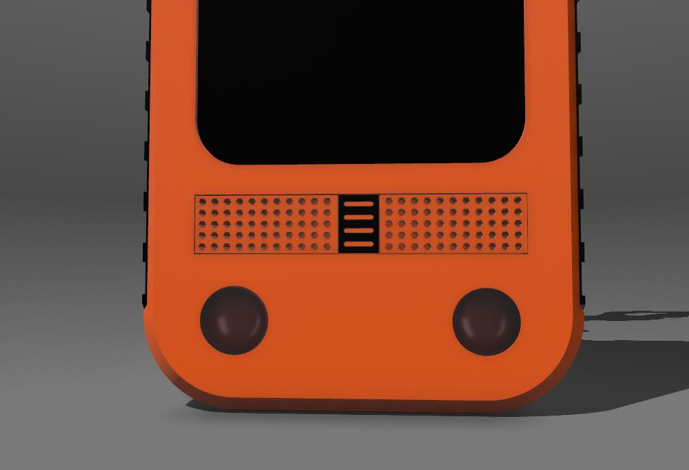

Bachelor's Thesis Project



Technologies used:
C++ (ESP32), LoRa, GPS module, OLED screen, accelerometer, barometer, and custom protocol design.
Link repo: GitHub (actually private)
Technologies used:
- Jetpack Compose → UI moderna e dichiarativa
- Firebase
- Auth → Autenticazione utenti
- Firestore → Database NoSQL in Cloud
- Analytics → Tracciamento eventi
- Ktor & KotlinX Serialization → Chiamate API REST e parsing JSON
- Koin → Dependency Injection semplice e modulare
- DataStore → Persistenza dati locale e salvataggio preferenza tema
- OSMDroid → Mappe OpenStreetMap
- Coil → Caricamento immagini efficiente
- YCharts → Grafici interattivi in Compose
- Google Play Services → Accesso alla geolocalizzazione
- Coroutines → Programmazione asincrona in Kotlin
Link repo: GitHub (actually private)